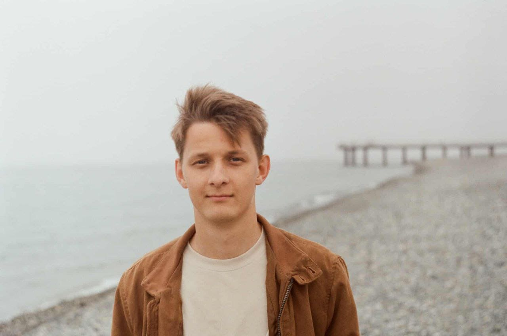

Timofey Klintsov
About Me

Hello! My name is Timofey Klintsov, and I am a student in the WDD 131 – Dynamic Web Fundamentals course. I have a passion for web development and enjoy creating interactive and user-friendly websites. In this course, I am learning the fundamentals of HTML, CSS, and JavaScript, which are essential skills for any aspiring web developer.
Georgia
Georgia is a country located at the crossroads of Eastern Europe and Western Asia. It is known for its ancient history, mountains, hospitality, traditional cuisine, and unique Georgian language. The capital city is Tbilisi. But i live in the city of Batumi, which is located on the coast of the Black Sea. Batumi is known for its beautiful beaches, modern architecture, and vibrant nightlife. It is a popular tourist destination and a great place to live for those who enjoy a mix of urban and coastal lifestyles.